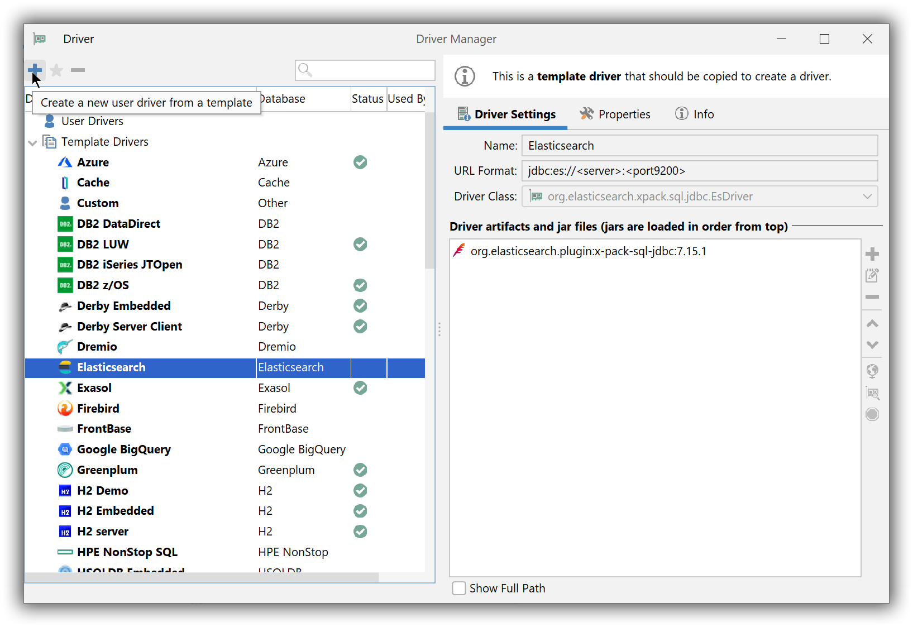
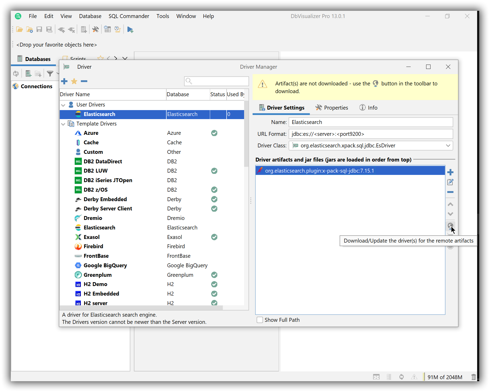
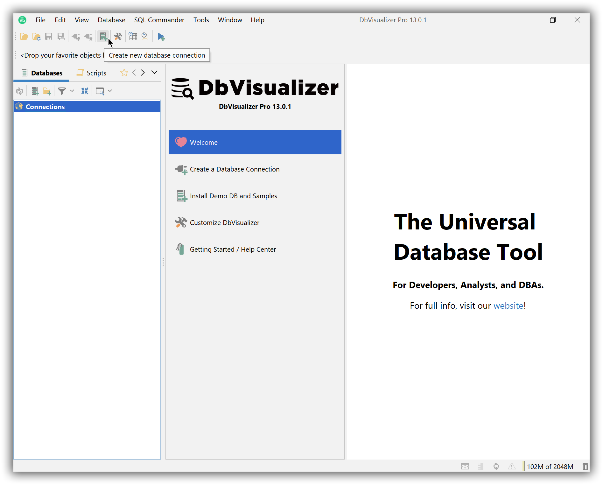
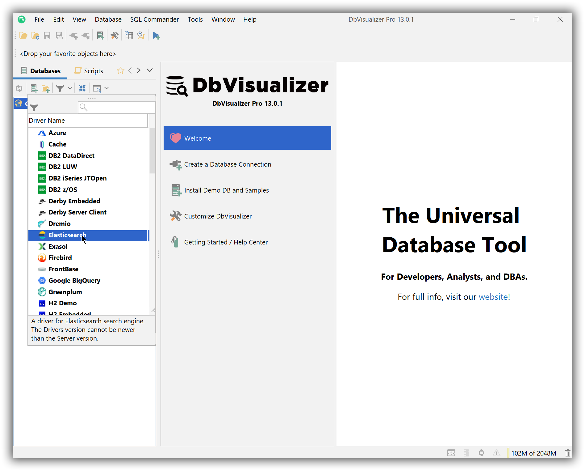
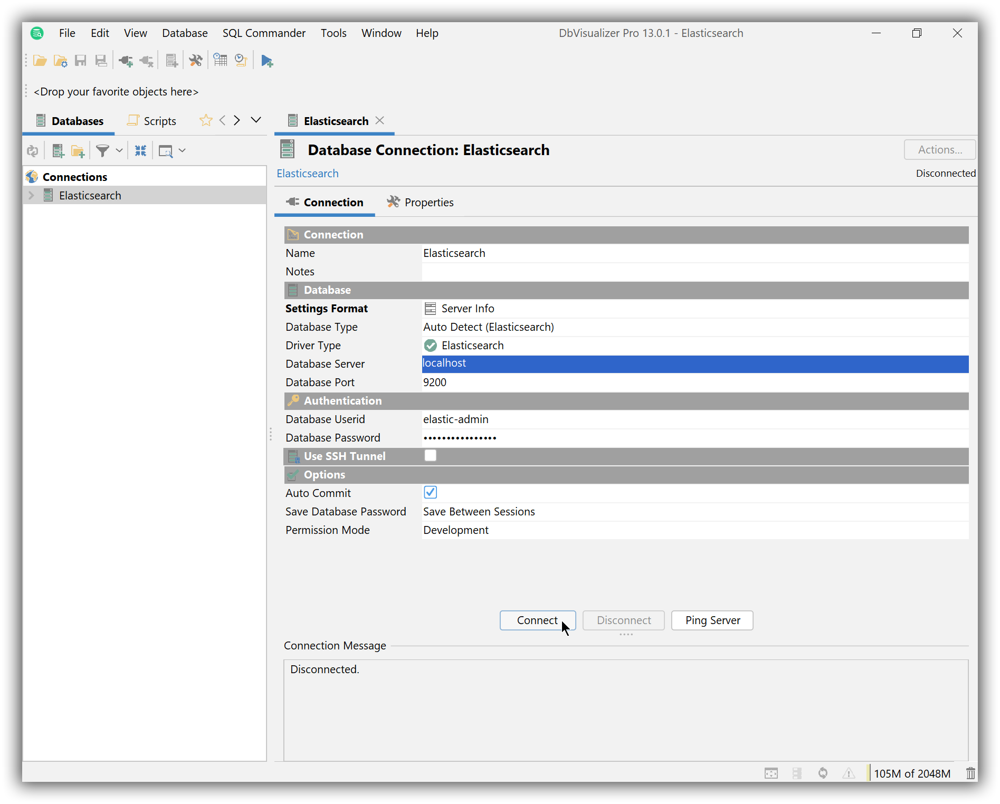
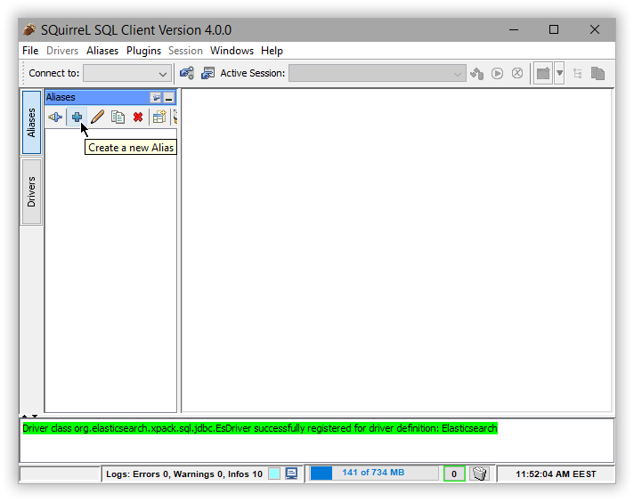

SQL Client Applicationsedit
Thanks to its JDBC and ODBC interfaces, a broad range of third-party applications can use Elasticsearch’s SQL capabilities. This section lists, in alphabetical order, a number of them and their respective configuration - the list however is by no means comprehensive (feel free to submit a PR to improve it): as long as the app can use the Elasticsearch SQL driver, it can use Elasticsearch SQL.
Elastic does not endorse, promote or provide support for any of the applications listed. For native Elasticsearch integration in these products, please reach out to their respective vendor.
Each application has its own requirements and license these are outside the scope of this documentation which covers only the configuration aspect with Elasticsearch SQL.
The support for applications implementing the ODBC 2.x standard and prior is currently limited.
DBeaveredit
You can use the Elasticsearch JDBC driver to access Elasticsearch data from DBeaver.
Elastic does not endorse, promote or provide support for this application; for native Elasticsearch integration in this product, please reach out to its vendor.
Prerequisitesedit
- DBeaver version 6.0.0 or higher
- Elasticsearch SQL JDBC driver
New Connectionedit
Create a new connection either through the menu File > New > Database Connection menu or directly through the Database Connection panel.
Specify the Elasticsearch cluster informationedit
Configure the Elasticsearch SQL connection appropriately:

Verify the driver versionedit
Make sure the correct JDBC driver version is used by using the Edit Driver Settings button:
DBeaver is aware of the Elasticsearch JDBC maven repository so simply Download/Update the artifact or add a new one. As an alternative one can add a local file instead if the Elasticsearch Maven repository is not an option.
When changing the driver, make sure to click on the Find Class button at the bottom - the Driver class should be picked out automatically however this provides a sanity check that the driver jar is properly found and it is not corrupt.
Test connectivityedit
Once the driver version and the settings are in place, use Test Connection to check that everything works. If things are okay, one should get a confirmation window with the version of the driver and that of Elasticsearch SQL:

Click Finish and the new Elasticsearch connection appears in the Database Connection panel.
DBeaver is now configured to talk to Elasticsearch.
Connect to Elasticsearchedit
Simply click on the Elasticsearch connection and start querying and exploring Elasticsearch:

DbVisualizeredit
You can use the Elasticsearch JDBC driver to access Elasticsearch data from DbVisualizer.
Elastic does not endorse, promote or provide support for this application.
Prerequisitesedit
- DbVisualizer 13.0 or higher
-
Elasticsearch SQL JDBC driver
- Note
- Pre 13.0 versions of DbVisualizer can still connect to Elasticsearch by having the JDBC driver set up from the generic Custom template.
Setup the Elasticsearch JDBC driveredit
Setup the Elasticsearch JDBC driver through Tools > Driver Manager:
Select Elasticsearch driver template from the left sidebar to create a new user driver:

Download the driver locally:

and check its availability status:
Create a new connectionedit
Once the Elasticsearch driver is in place, create a new connection:

by double-clicking the Elasticsearch entry in the list of available drivers:

Enter the connection details, then press Connect and the driver version (as that of the cluster) should show up under Connection Message.

Execute SQL queriesedit
The setup is done. DbVisualizer can be used to run queries against Elasticsearch and explore its content:
Microsoft Exceledit
You can use the Elasticsearch ODBC driver to access Elasticsearch data from Microsoft Excel.
Elastic does not endorse, promote or provide support for this application; for native Elasticsearch integration in this product, please reach out to its vendor.
Prerequisitesedit
- Microsoft Office 2016 or higher
- Elasticsearch SQL ODBC driver
- A preconfigured User or System DSN (see Configuration section on how to configure a DSN).
Load data into a spreadsheetedit
First, you’ll need to choose ODBC as the source to load data from. To do so, click on the Data tab, then New Query button, in the drop-down menu expand From Other Sources, then choose From ODBC:
This will open a new window with a drop down menu populated with the DSNs that Excel found on the system. Choose a DSN configured to connect to your Elasticsearch instance and press the OK button:

This will lead to a new window, allowing the user to input the connection credentials.
A username might be required by Excel even if the Elasticsearch instance has no security enabled. Providing a bogus username with no password in this case will not hinder the connectivity. Note however that Excel will cache these credentials (so in case you do have security enabled, you won’t be prompted for the credentials a second time).
Fill in the username and the password and press Connect.
Provide connection credentials
Once connected, Excel will read Elasticsearch’s catalog and offer the user a choice of tables (indices) to load data from. Clicking on one of the tables will load a preview of the data within:

Now click the Load button, which will have Excel load all the data from the table into a spreadsheet:
Microsoft Power BI Desktopedit
You can use the Elasticsearch ODBC driver to access Elasticsearch data from Microsoft Power BI Desktop.
Elastic does not endorse, promote or provide support for this application; for native Elasticsearch integration in this product, please reach out to its vendor.
Prerequisitesedit
- Microsoft Power BI Desktop 2.63 or higher
- Elasticsearch SQL ODBC driver
- A preconfigured User or System DSN (see Configuration section on how to configure a DSN).
Data loadingedit
First, you’ll need to choose ODBC as the source to load data from. Once launched, click on the Get Data button (under Home tab), then on the More… button at the bottom of the list:

In the new opened window scroll at the bottom of the All list and select the ODBC entry, then click on the Connect button:
This will replace current window with a new From ODBC one, where you’ll have to select a previously configured DSN:

Once connected Power BI will read Elasticsearch’s catalog and offer the user a choice of tables (indices) to load data from. Clicking on one of the tables will load a preview of the data within:

Now tick the chosen table and click on the Load button. Power BI will now load and analyze the data, populating a list with the available columns. These can now be used to build the desired visualisation:
Microsoft PowerShelledit
You can use the Elasticsearch ODBC driver to access Elasticsearch data from Microsoft PowerShell.
Elastic does not endorse, promote or provide support for this application; for native Elasticsearch integration in this product, please reach out to its vendor.
Prerequisitesedit
- Microsoft PowerShell
- Elasticsearch SQL ODBC driver
- A preconfigured User or System DSN (see Configuration section on how to configure a DSN).
Writing a scriptedit
While putting the following instructions into a script file is not an absolute requirement, doing so will make it easier to extend and
reuse. The following instructions exemplify how to execute a simple SELECT query from an existing index in your Elasticsearch instance, using a DSN
configured in advance. Open a new file, select.ps1, and place the following instructions in it:
$connectstring = "DSN=Local Elasticsearch;" $sql = "SELECT * FROM library" $conn = New-Object System.Data.Odbc.OdbcConnection($connectstring) $conn.open() $cmd = New-Object system.Data.Odbc.OdbcCommand($sql,$conn) $da = New-Object system.Data.Odbc.OdbcDataAdapter($cmd) $dt = New-Object system.Data.datatable $null = $da.fill($dt) $conn.close() $dt
Now open a PowerShell shell and simply execute the script:
MicroStrategy Desktopedit
You can use the Elasticsearch ODBC driver to access Elasticsearch data from MicroStrategy Desktop.
Elastic does not endorse, promote or provide support for this application; for native Elasticsearch integration in this product, please reach out to its vendor.
Prerequisitesedit
- MicroStrategy Desktop 11 or higher
- Elasticsearch SQL ODBC driver
- A preconfigured User or System DSN (see Configuration section on how to configure a DSN).
Data loadingedit
To use the Elasticsearch SQL ODBC Driver to load data into MicroStrategy Desktop perform the following steps in sequence.
-
Create a New Dossier
Once the application is launched, you’ll first need to create a New Dossier:
-
New Data
To import into the New Dossier just opened, press on the New Data button in the DATASETS column:
-
Access data from Tables
This opens a new window that allows to choose the source to load data from. Click on the Databases icon:
-
New Data Source
In the newly opened Import from Table - Select window, click on the + button to the right of DATA SOURCES item:
-
Data Source
In the Data Source window, tick the radio button for DSN Data Sources. In the DSN drop-down box, choose the name of the DSN that you have previously configured. For the Version, chose Generic DBMS.
Input a user name and password in the provided fields. Note that the application requires them irrespective of the fact that they might already be part of the previously configured DSN and the new input will take precedence over those.
Finally, give a name to the application-specific data source you’re just configuring:
-
Select Import Options
Choosing an import methodology follows. You can pick any of the options; we’ll exemplify the Select Tables option:
-
Import from Table - Select
The data source you’ve named two steps before is now listed in the DATA SOURCES column. Clicking on its name triggers the application to query the Elasticsearch instance configured in the DSN and list the tables available within:
-
Data Access Mode
Choose a table to load data from and press the Finish button. When doing so, the application offers to choose a loading methodology. You can choose whichever, we’ll exemplify the Connect Live way:
-
Visualize the data
From the DATASETS column you can choose what table columns (or index fields) to visualize:


Qlik Sense Desktopedit
You can use the Elasticsearch ODBC driver to access Elasticsearch data from Qlik Sense Desktop.
Elastic does not endorse, promote or provide support for this application; for native Elasticsearch integration in this product, please reach out to its vendor.
Prerequisitesedit
- Qlik Sense Desktop November 2018 or higher
- Elasticsearch SQL ODBC driver
- A preconfigured User or System DSN (see Configuration section on how to configure a DSN).
Data loadingedit
To use the Elasticsearch SQL ODBC Driver to load data into Qlik Sense Desktop perform the following steps in sequence.
-
Create new app
Once the application is launched, you’ll first need to click on the Create new app button:
-
Name app
…then give it a name,
-
Open app
…and then open it:
-
Add data to your app
Start configuring the source to load data from in the newly created app:
-
Load from ODBC
You’ll be given a choice of sources to select. Click on the ODBC icon:
-
Choose DSN
In the Create new connection (ODBC) dialog, click on the DSN name that you have previously configured for your Elasticsearch instance:
Provide a username and password in the respective fields, if authentication is enabled on your instance and if these are not already part of the DSN. Press the Create button.
-
Select source table
The application will now connect to the Elasticsearch instance and query the catalog information, presenting you with a list of tables that you can load data from:
-
Visualize the data
Press on the Add data button and customize your data visualization:


SQuirreL SQLedit
You can use the Elasticsearch JDBC driver to access Elasticsearch data from SQuirreL SQL.
Elastic does not endorse, promote or provide support for this application; for native Elasticsearch integration in this product, please reach out to its vendor.
Prerequisitesedit
- SQuirreL SQL version 4.0.0 or higher
- Elasticsearch SQL JDBC driver
Add Elasticsearch JDBC Driveredit
To add the Elasticsearch JDBC driver, use Windows > View Drivers menu (or Ctrl+Shift+D shortcut):

Select Elasticsearch profile from the Drivers panel on the left-hand side (if it is missing check the SQuirreL SQL version or add a new entry to the list through the ‘+’ button in the upper left corner):

Select the Extra Class Path tab and Add the JDBC jar. Name the connection and List Drivers to have Class Name populated if it is not already filled-in :

The driver should now appear in the list with a blue check mark next to its name:

Add an alias for Elasticsearchedit
Add a new connection or in SQuirreL terminology an alias using the new driver. To do so, select the Aliases panel on the left and click the + sign:

Name the new alias and select the Elasticsearch driver previously added:
The setup is completed. Double check it by clicking on Test Connection.
Execute SQL queriesedit
The connection should open automatically (if it has been created before simply click on Connect in the Alias panel). SQuirreL SQL can now issue SQL commands to Elasticsearch:
SQL Workbench/Jedit
You can use the Elasticsearch JDBC driver to access Elasticsearch data from SQL Workbench/J.
Elastic does not endorse, promote or provide support for this application; for native Elasticsearch integration in this product, please reach out to its vendor.
Prerequisitesedit
- SQL Workbench/J build 125 or higher
- Elasticsearch SQL JDBC driver
Add Elasticsearch JDBC driveredit
Add the Elasticsearch JDBC driver to SQL Workbench/J through Manage Drivers either from the main windows in the File menu or from the Connect window:

Select Elasticsearch profile from the left-hand side (if it is missing check the SQL Workbench/J version or add a new entry to the list through the blank page button in the upper left corner):

Add the JDBC jar (if the driver name hasn’t been picked up already, click on the magnifier button):
Create a new connection profileedit
With the driver configured, create a new connection profile through File > Connect Window (or Alt+C shortcut):

Select the previously configured driver and set the URL of your cluster using the JDBC syntax. Verify the connection through the Test button - a confirmation window should appear that everything is properly configured.
The setup is complete.
Execute SQL queriesedit
SQL Workbench/J is ready to talk to Elasticsearch through SQL: click on the profile created to execute statements or explore the data:
Tableau Desktopedit
Use the Elasticsearch JDBC driver and dedicated Elasticsearch Tableau Connector to access Elasticsearch data from Tableau Desktop.
Elastic does not endorse, promote or provide support for this application; for native Elasticsearch integration in this product, please reach out to its vendor.
Prerequisitesedit
- Tableau Desktop 2019.4 or later
- Elasticsearch SQL JDBC driver
- Elasticsearch Connector for Tableau
Load dataedit
First, move or download the JDBC driver to the Tableau Desktop drivers directory:
-
Windows:
C:\Program Files\Tableau\Drivers -
Mac:
/Users/[user]/Library/Tableau/Drivers
Move the Elasticsearch Connector for Tableau to the Tableau Desktop connectors directory:
-
Windows:
C:\Users\[Windows User]\Documents\My Tableau Repository\Connectors -
Mac:
/Users/[user]/Documents/My Tableau Repository/Connectors
Launch Tableau Desktop. In the menu, click More… and select Elasticsearch by Elastic as the data source.
In the New connection modal, enter the information for your Elasticsearch instance, and click Sign In.

In the main window, select your Elasticsearch instance as the Database. Then select a table to load.

Finally, generate a report.

Tableau Serveredit
Use the Elasticsearch JDBC driver and dedicated Elasticsearch Tableau Connector to access Elasticsearch data from Tableau Server.
Elastic does not endorse, promote or provide support for this application; for native Elasticsearch integration in this product, please reach out to its vendor.
Prerequisitesedit
- Tableau Server 2019.4 or later
- Elasticsearch SQL JDBC driver
- Elasticsearch Connector for Tableau
Load dataedit
First, move or download the JDBC driver to the Tableau Server drivers directory:
-
Windows:
C:\Program Files\Tableau\Drivers -
Mac:
/Users/[user]/Library/Tableau/Drivers
Move the Elasticsearch Connector for Tableau to the Tableau Server connectors directory. To find the location of this directory, refer to Tableau Server documentation or use the TSM command line interface.
Restart Tableau Server.
To load data into a workbook, add a New Data Source from the Data menu or using the icon. In the Connectors tab of the Connect to Data modal, select Elasticsearch by Elastic.

Enter the information for your Elasticsearch instance, and click Sign In.

In the main window, select your Elasticsearch instance as the Database. Then select a table to load.
Finally, generate a report.